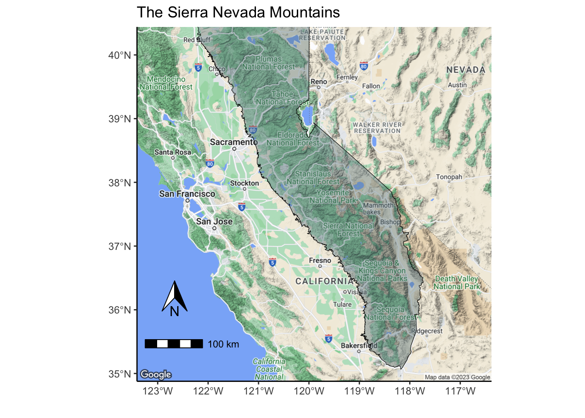
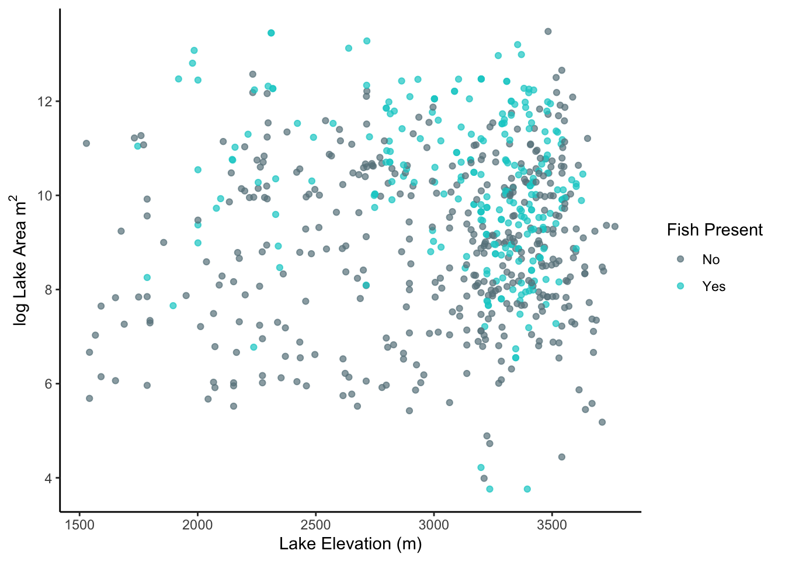

The Sierra Nevada Mountains of California contain some of the nations most pristine wilderness, including thousands of lakes scattered throughout the range. Historically, the majority of these lakes were not inhabited with fish due to their fragmented and isolated nature, making it very difficult for fish to access lakes at high elevation. The Department of Fish and Game began to stock these lakes in the 20th century to promote recreational fishing in the range (R. Knapp 1996). While this provided many benefits to society, fish stocking posed many ecological threats to native species (R. Knapp 1996). These introduced trout (Rainbow, Brooke, Golden, Brown, Cutthroat, and hybrids) rely on zooplankton, a broad classifications of small organisms suspended in the water column that feed on phytoplankton and microbes, as a main food source in their fry stage of life (MacLennan, Dings-Avery, and Vinebrooke 2015).
This study aims to understand the abiotic (non-living) and biotic (living) factors that influence zooplankton community dynamics in the High Sierra. The questions being asked are:
1) How does the size and elevation of lakes affect the diversity and richness of zooplankton communities?
2) Does the presence of fish influence the diversity and richness of zooplankton in these lakes?
I used multiple linear regression models to understand if and how diversity and richness were being affected by these variables. Because previous literature suggests that lakes support smaller foodwebs with decreasing size (Post, Pace, and Hairston 2000) and become more oligotrophic (less nutrient input) with increasing elevation (Sadro, Nelson, and Melack 2012), I hypothesized that the diversity and richness of zooplankton communities would lessen as lake size decreases and elevation increases. Furthermore, the presence of fish will present selective predation on certain zooplankton species, altering species diversity and richness as well.
code
# map of the sierra nevada mountainsmap <-ggmap(basemap) +geom_sf(data = snb, color ="black", fill ="lightblue4", alpha = .4, inherit.aes =FALSE) +labs(title ="The Sierra Nevada Mountains", x ="", y ="") +theme_classic() +annotation_scale(location ="bl",pad_y =unit(0.4, "in")) +annotation_north_arrow(location ="bl",pad_x =unit(0.3, "in"),pad_y =unit(0.8, "in"),height =unit(.4, "in"),width =unit(.3, "in"),size =5)map

Figure 1. Map of the Sierra Nevada Mountain Range in California. Data: https://gis.data.cnra.ca.gov/datasets/727b3cc24f8549759fe946a298dc3a20/explore?location=38.508918%2C-118.370394%2C6.43
Methods
Over 1,100 lakes were surveyed from 1995-2002 as a part of the Sierra Lakes Inventory Project (SLIP), with the goal of describing the biodiversity of lentic water bodies in lakes, ponds, marshes, and meadows in the Southern Sierra (R. A. Knapp et al., n.d.). All study observation and samples were collected between months of July and September. Area and elevation of the lakes were calculated using GPS and GIS for lakes where area was unknown. Fish presence was measured using both visual and net surveys at the edge of lakes to identify species presence. Zooplankton samples were collected in water samples that were then packed out and identified in the lab at the Sierra Nevada Aquatic Research Laboratory (SNARL) in Mammoth Lakes, California. Due to the varying stages of maturity and small sizes of zooplankton, taxon were sometimes identified to genus, family, or life stage if not able to be identified to species level. Zooplankton samples were originally collected in 3 different subsamples, so diversity was averaged for all 3 lake subsamples to calculate each lake’s Shannon-Wiener diversity index. Species richness was calculated by identifying unique taxon across all 3 samples. Zooplankton data was not collected in 1998, 1999, or 2002.
Results
Exploratory Data Analysis
Before doing any modeling, I wanted to visualize and explore the data a bit to understand how it was distributed. A histogram of the log lake area returned a relatively normally distributed curve with a short right tail, suggesting that medium to larger lakes were more frequently observed than small ones (fig.2.A). Distributions appeared to be similar regardless of fish presence. A histogram of lake elevation showed less of a normal distribution with a long left tail, indicating that the majority of lakes observed were at higher elevations (fig.2.B). Regardless of fish presence, the shape of the curve still resembles somewhat of a normal unimodal shape despite the long tail.
Note:Log area is used in this study as the area had a skewed distribution, and the log transformation suited the data better for linear modeling.
code
# making histograms of area and elevationh1 <-ggplot(data = total , aes(x =log(lake_area_nbr), fill = actual_fish_presence)) +geom_histogram(color ="black", size = .1) +scale_fill_manual(name ="Fish Present ", values =c("lightblue4", "cyan3")) +theme_classic() +labs(x =expression("log Lake Area m"^2))h2 <-ggplot(data = total , aes(x = lake_elevation_nbr, fill = actual_fish_presence)) +geom_histogram(color ="black", size = .1) +scale_fill_manual(name ="Fish Present ", values =c("lightblue4", "cyan3")) +theme_classic() +labs(x ="Lake Elevation (m)", y ="")hist <- h1 + h2 +plot_layout(guides ="collect",heights =5) +plot_annotation(tag_levels ="A") &theme(legend.position ="bottom")hist
Figure 2. A) Histogram showing the frequency of lakes observed by log area. B) Histogram showing the frequency of lakes observed by elevation.
code
#correlation of independent variablesind_cor <-cor(log(total$lake_area_nbr), total$lake_elevation_nbr)
One concern in working with this data was collinearity between independent variables, which can lead to dramatic changes in the dependent variables (diversity and richness) if it occurred. I examined a simple scatterplot to visually inspect for a possible relationship between log lake area and elevation, both with and without fish present (fig.3). While fish seemed to be more frequent in larger lakes and observations were clustered slightly clustered at high elevation, the data points appeared to be scattered and noisy with little evidence of a significant relationship. The correlation between log lake area and elevation was minimal so I kept both independent variables in consideration through the study (r = 0.03.
code
#making scatterplots with independent variablesscatter <-ggplot(total, aes(y =log(lake_area_nbr), x = lake_elevation_nbr, color = actual_fish_presence)) +geom_point(alpha = .7) +scale_color_manual(name ="Fish Present ", values =c("lightblue4", "cyan3")) +labs(x ="Lake Elevation (m)", y =expression("log Lake Area m"^2) ) +theme_classic()scatter

Figure 3. Scatterplot showing relationship of log lake area and lake elevation. Correlation between vairables was low, indicationg no collinearity between dependent variables.
code
#correlation of independent and dependent variablescors = total %>%group_by(actual_fish_presence) %>%summarise(cor_da =round(cor(mean_div, log(lake_area_nbr)), 2),cor_de =round(cor(mean_div, lake_elevation_nbr), 2),cor_ra =round(cor(richness, log(lake_area_nbr)), 2),cor_re =round(cor(richness, lake_elevation_nbr), 2))
Exploratory data analysis suggested that zooplankton species diversity and richness increases with the log area of a lake and decrease with elevation (fig. 4). The correlation was positive and weaker for species diversity and log lake area when fish were absent compared to present (r = 0.11, r = 0.33) (fig.4.A). Similar results occured for species richness and log lake area (r = 0.05, r = 0.36) (fig.4.B). Diversity and richness in lakes were strongly and negatively correlated with with elevation, and the presence of fish did not change the correlation strength noticeably (r = -0.44, r = -0.45) (fig.4.C). Stronger negative relationships were found between species richness and elevation both with and without fish (r = -0.55, r = -0.53) (fig.4.D).
code
# diversity log lake areada <-ggplot(data = total, aes(x =log(lake_area_nbr), y = mean_div, color = actual_fish_presence)) +labs(x =expression("log Lake Area m"^2), y ="Mean Diversity") +geom_jitter(alpha =0.7) +geom_smooth(formula = y ~ x, method ="lm", se = T, lwd =0.8) +theme_classic() +scale_color_manual(name ="Fish Present ", values =c("lightblue4", "cyan3")) +stat_cor(aes(label = ..r.label..),r.accuracy =0.01,label.x.npc = .01,label.y.npc =1,show.legend =FALSE,size =2.5)# diversity log lake elevationde <-ggplot(data = total, aes(x = lake_elevation_nbr, y = mean_div, color = actual_fish_presence)) +labs(x ="Lake Elevation (m)", y ="Mean Diversity") +geom_jitter(alpha =0.7) +geom_smooth(formula = y ~ x, method ="lm", se = T, lwd =0.8) +theme_classic() +scale_color_manual(name ="Fish Present ", values =c("lightblue4", "cyan3")) +stat_cor(aes(label = ..r.label..),r.accuracy =0.01,label.x.npc = .075,label.y.npc = .25,show.legend =FALSE,size =2.5)# richness log lake areara<-ggplot(data = total, aes(x =log(lake_area_nbr), y = richness, color = actual_fish_presence)) +labs(x =expression("log Lake Area m"^2), y ="Richness") +geom_jitter(alpha =0.7) +geom_smooth(formula = y ~ x, method ="lm", se = T, lwd =0.8) +theme_classic() +scale_color_manual(name ="Fish Present ", values =c("lightblue4", "cyan3")) +stat_cor(aes(label = ..r.label..),r.accuracy =0.01,label.x.npc = .01,label.y.npc =1,show.legend =FALSE,size =2.5)# diversity log lake elevationre <-ggplot(data = total, aes(x = lake_elevation_nbr, y =richness, color = actual_fish_presence)) +labs(x ="Lake Elevation (m)", y ="Richness") +geom_jitter(alpha =0.7) +geom_smooth(formula = y ~ x, method ="lm", se = T, lwd =0.8) +theme_classic() +scale_color_manual(name ="Fish Present ", values =c("lightblue4", "cyan3")) +stat_cor(aes(label = ..r.label..),r.accuracy =0.01,label.x.npc = .01,label.y.npc =1,show.legend =FALSE,size =2.5)#combined correlations figurecorrelations <- (da + ra)/(de + re) +plot_layout(guides ="collect",heights =5) +plot_annotation(tag_levels ="A") &theme(legend.position ="bottom")# & ylab(NULL) & theme(plot.margin = margin(6.5, 5.5, 0, 5.5)) correlations
Figure 4. A) Mean zooplankton species diversity as a function of lake log area; B) Zooplankton species richness as a function of the log area of lakes; C) Mean zooplankton species diversity as a function of lake elevation; D) Zooplankton species richness as a function of lake elevation; Diversity was calculated using the Shannon-Wiener Index.
Multiple Linear Regression
These preliminary results were used to inform further analysis through the use of multiple linear regression models. I tested these initial observed patterns by modeling zooplankton species diversity and richness as a function of the following explanatory variables: log lake area, lake elevation, fish presence, interaction of log lake area x fish presence (eda hinted at a potential effect as seen in the difference of slopes in fig.2.A and fig.2.B), and the addition of a temporal component (year) to see if these community dynamic patterns changed aver time. The goal of these models were to test the strength of the predictor variables in explaining the variation in zooplankton diversity and richness and to also test if these variable were statistically significance (\(\alpha\) = .05).
The species diversity model results conclude that the log area (positively) and lake elevation (negatively) significantly affected zooplankton species diversity (p < .05, p < .001). While lakes with fish present reduced zooplankton diversity, no significance was found (P > .05). Similarly, the interaction between log lake area and fish presence was insignificant but positively affected diversity (more so than lakes without fish) (p = .14). No individual year had a significant effect on species diversity.
The species richness model also showed that the log lake area (positively) and lake elevation (negatively) significantly affected zooplankton richness (p < .05, p < .001). Unlike the diversity model, species richness was significantly and negatively affected by the presence of fish in lakes (p < 0.05). The interaction between log lake area and fish presence also was a significant factor in affecting species richness, indicating that the size of the lake affected zooplankton richness differently depending on whether fish were present or not (p < .05). No individual year had a significant effect on species richness.
code
#diversity model m_div <-lm(mean_div ~log(lake_area_nbr) + lake_elevation_nbr + actual_fish_presence +log(lake_area_nbr):actual_fish_presence + year, data = total)# m_div_sum <- summary(m_div)#richness modelm_rich <-lm(richness ~log(lake_area_nbr) + lake_elevation_nbr + actual_fish_presence +log(lake_area_nbr):actual_fish_presence + year, data = total)# summary(m_rich)#creatign a table tab_model(m_div, m_rich,pred.labels =c("Intercept", "log Area", "Elevation","Fish Presence(Yes)", "1997","2000", "2001","log Area x Fish Presence(Yes)"),dv.labels =c("Divsersity", "Richness"),string.ci ="Conf. Int (95%)",string.p ="p-value",title ="Table 1. Multiple Linear Regression Model Results.",digits =4)
Table 1. Multiple Linear Regression Model Results.
Divsersity
Richness
Predictors
Estimates
Conf. Int (95%)
p-value
Estimates
Conf. Int (95%)
p-value
Intercept
1.8560
1.4600 – 2.2521
<0.001
12.6131
10.7139 – 14.5123
<0.001
log Area
0.0285
0.0046 – 0.0523
0.019
0.1383
0.0238 – 0.2527
0.018
Elevation
-0.0004
-0.0005 – -0.0003
<0.001
-0.0026
-0.0031 – -0.0021
<0.001
Fish Presence(Yes)
-0.3205
-0.7335 – 0.0924
0.128
-2.2044
-4.1847 – -0.2242
0.029
1997
0.0830
-0.0317 – 0.1976
0.156
-0.0721
-0.6218 – 0.4777
0.797
2000
-0.0304
-0.1515 – 0.0906
0.621
-0.3699
-0.9504 – 0.2106
0.211
2001
0.0192
-0.1260 – 0.1644
0.795
-0.1259
-0.8223 – 0.5706
0.723
log Area x Fish Presence(Yes)
0.0305
-0.0100 – 0.0710
0.140
0.2185
0.0242 – 0.4129
0.028
Observations
545
545
R2 / R2 adjusted
0.240 / 0.230
0.349 / 0.340
Residuals
QQ plots were made to test if the residuals were normally distributed (fig.5). As seen in the plots, the residuals for both models fit the normal distribution quite well, with the exception of a slight and minor deviation in the tails. This implies that the diversity model residuals have a slight negative skew (fig.5.A), and the richness model has slightly fatter than expected tails (fig.5.B). In conclusion, the QQ plots imply assumptions of normality are met.
code
#diversity model residualsm_div_res <-residuals(m_div)#richness model residualsm_rich_res <-residuals(m_rich)#qq plot for diversity div_qq <-ggplot( m_div, aes(sample = .resid)) +geom_qq(color ="lightblue4") +geom_qq_line() +theme_classic() +labs( x ="Theoretical Quantiles", y ="Sample Quantiles")#qq plot for richnessrich_qq <-ggplot( m_rich, aes(sample = .resid)) +geom_qq(color ="lightblue4") +geom_qq_line() +theme_classic() +labs( x ="Theoretical Quantiles", y ="")#joining plotsqq <- div_qq + rich_qq +plot_annotation(tag_levels ="A") qq
Figure 5. A) QQ plot of zooplankton species diversity model residuals. Theororetical and sample residuals are generally suggestive of a normal distribution, but show slight deviation in the tails which suggest the distribution has a slight negative skew. B) QQ plot of zooplankton species richness model residuals. Theororetical and sample residuals are generally suggestive of a normal distribution, but show slight deviation in the tails which suggest the distribution has fat tails.
code
ggsave("figures/residuals.png", qq, height =5, width =8, unit ='in')
Discussion
Zooplankton species diversity and richness are closely related, and they both responded similarly to abiotic conditions (log lake area and lake elevation). (Urmy and Warren 2019) also showed that zooplankton species responded noticeably across elevation even at a fine scale. However, species richness was noticeably lower in lakes with fish present compared to without when holding lake area and elevation constant, indicating that biotic factors (fish present) alter the ability of specific zooplankton species to persist (likely due to taxa specific predation).
The most interesting finding from these results is that the area of a lake affects the zooplankton species richness noticeably more when fish are present as seen in the interaction coefficient of the richness model. Richness is very low in small lakes and very high in large lakes when fish are present (steep positive slope), whereas richness is moderate to high in lakes without fish (moderate positive slope). Other studies have found similar results where the effects of fish predation on zooplankton are amplified by varying environmental conditions (MacLennan, Dings-Avery, and Vinebrooke 2015). This begs the question: Why are zooplankton more sensitive to changes in lake area when fish are present vs absent? This question can be answered by the ecological principle known as the Island Biogeography Theory which states that prey on smaller islands (or habitats) experience more intense predation pressure from predators than on larger islands (MacArthur and Wilson 2001). Due to their isolation and limited resources, zoo plankton in small lakes experience higher extinction rates from concetrated predation, less resources (nutrient input), and lower emigration . This applies quite literally into our study system here were introduced fish in small lakes (islands) suppress zooplankton species richness (prey) more intensely than in larger lakes (islands). Similar patterns have also been observed across taxa in lakes across North America (Browne 1981).
This study did not include a spatial element as coordinates were not provided in the data as a measure to keep sensitive and rare fish lakes discreet. Future research should look at other taxa in oligotrophic alpine lake food webs (algae, microbes, benthic macroinvertebrates) to understand potential trophic cascades and community wide effects of fish introduction.
References
Browne, Robert A. 1981. “Lakes as Islands: Biogeographic Distribution, Turnover Rates, and Species Composition in the Lakes of Central New York.”Journal of Biogeography 8 (1): 75–83. https://doi.org/10.2307/2844594.
Knapp, Roland. 1996. “Non-Native Trout in Natural Lakes of the Sierra Nevada: An Analysis of Their Distribution and Impacts on Native Aquatic Biota.”https://www.highsierrahikers.org/issue_fish.pdf.
Knapp, Roland A., Claire Pavelka, Ericka E. Hegeman, and Thomas C. Smith. n.d. “The Sierra Lakes Inventory Project: Non-Native Fish and Community Composition of Lakes and Ponds in the Sierra Nevada, California.”https://doi.org/10.6073/PASTA/D835832D7FD00D9E4466E44EEA87FAB3.
MacArthur, Robert H., and Edward O. Wilson. 2001. The Theory of Island Biogeography. Princeton University Press.
MacLennan, Megan M., Chantal Dings-Avery, and Rolf D. Vinebrooke. 2015. “Invasive Trout Increase the Climatic Sensitivity of Zooplankton Communities in Naturally Fishless Lakes.”Freshwater Biology 60 (8): 1502–13. https://doi.org/10.1111/fwb.12583.
Post, David M., Michael L. Pace, and Nelson G. Hairston. 2000. “Ecosystem Size Determines Food-Chain Length in Lakes.”Nature 405 (6790): 1047–49. https://doi.org/10.1038/35016565.
Sadro, Steven, Craig E. Nelson, and John M. Melack. 2012. “The Influence of Landscape Position and Catchment Characteristics on Aquatic Biogeochemistry in High-Elevation Lake-Chains.”Ecosystems 15 (3): 363–86. https://doi.org/10.1007/s10021-011-9515-x.
Urmy, Samuel S., and Joseph D. Warren. 2019. “Seasonal Changes in the Biomass, Distribution, and Patchiness of Zooplankton and Fish in Four Lakes in the Sierra Nevada, California.”Freshwater Biology 64 (10): 1692–1709. https://doi.org/10.1111/fwb.13362.
Citation
BibTeX citation:
@online{hunter2023,
author = {Hunter, Raymond},
title = {Drivers of {Zooplankton} {Community} {Dynamics} in {Sierra}
{Nevada} {Lakes}},
date = {2023-12-08},
url = {https://ramhunte.github.io/blogs/sierra_lakes/},
langid = {en}
}
---title: "Drivers of Zooplankton Community Dynamics in Sierra Nevada Lakes"description: "A look into modeling microcosms"author: - name: Raymond Hunter url: https://ramhunte.github.io/date: 12-08-2023bibliography: references.bibcitation: url: https://ramhunte.github.io/blogs/sierra_lakes/image: copepod.jpgcategories: [Quarto, R, ecology] # self-defined categoriesformat: html: code-fold: true code-copy: true code-summary: "code" code-line-numbers: true code-tools: true code-block-border-left: truetoc: truedraft: false # setting this to `true` will prevent your post from appearing on your listing page until you're ready!---```{r setup, include=TRUE}knitr::opts_chunk$set(echo = TRUE, message = FALSE, warning = FALSE, results = FALSE, fig.align = "center")#required packageslibrary(tidyverse)library(janitor)library(lubridate)library(vegan)library(sf)library(ggspatial)library(ggmap)library(janitor)library(patchwork)library(gridExtra)library(ggpubr)library(sjPlot)library(leaflet)``````{r setup, include=FALSE}source("/Users/rayhunter/Documents/Bren/Past_Courses/EDS_222/sierra_lakes_analysis/blog_script.R")```[Github project repository](https://github.com/ramhunte/sierra_lakes_analysis)## IntroductionThe Sierra Nevada Mountains of California contain some of the nations most pristine wilderness, including thousands of lakes scattered throughout the range. Historically, the majority of these lakes were not inhabited with fish due to their fragmented and isolated nature, making it very difficult for fish to access lakes at high elevation. The Department of Fish and Game began to stock these lakes in the 20th century to promote recreational fishing in the range [@knapp1996]. While this provided many benefits to society, fish stocking posed many ecological threats to native species [@knapp1996]. These introduced trout (Rainbow, Brooke, Golden, Brown, Cutthroat, and hybrids) rely on zooplankton, a broad classifications of small organisms suspended in the water column that feed on phytoplankton and microbes, as a main food source in their fry stage of life [@maclennan2015].This study aims to understand the abiotic (non-living) and biotic (living) factors that influence zooplankton community dynamics in the High Sierra. The questions being asked are:**1) How does the size and elevation of lakes affect the diversity and richness of zooplankton communities?****2) Does the presence of fish influence the diversity and richness of zooplankton in these lakes?**I used multiple linear regression models to understand if and how diversity and richness were being affected by these variables. Because previous literature suggests that lakes support smaller foodwebs with decreasing size [@post2000] and become more oligotrophic (less nutrient input) with increasing elevation [@sadro2012], I hypothesized that the diversity and richness of zooplankton communities would lessen as lake size decreases and elevation increases. Furthermore, the presence of fish will present selective predation on certain zooplankton species, altering species diversity and richness as well.```{r, fig.cap = "**Figure 1.** Map of the Sierra Nevada Mountain Range in California. Data: https://gis.data.cnra.ca.gov/datasets/727b3cc24f8549759fe946a298dc3a20/explore?location=38.508918%2C-118.370394%2C6.43"}# map of the sierra nevada mountainsmap <- ggmap(basemap) + geom_sf(data = snb, color = "black", fill = "lightblue4", alpha = .4, inherit.aes = FALSE) + labs(title = "The Sierra Nevada Mountains", x = "", y = "") + theme_classic() + annotation_scale(location = "bl", pad_y = unit(0.4, "in")) + annotation_north_arrow(location = "bl", pad_x = unit(0.3, "in"), pad_y = unit(0.8, "in"), height = unit(.4, "in"), width = unit(.3, "in"), size = 5)map```## MethodsOver 1,100 lakes were surveyed from 1995-2002 as a part of the Sierra Lakes Inventory Project (SLIP), with the goal of describing the biodiversity of lentic water bodies in lakes, ponds, marshes, and meadows in the Southern Sierra [@knapp]. All study observation and samples were collected between months of July and September. Area and elevation of the lakes were calculated using GPS and GIS for lakes where area was unknown. Fish presence was measured using both visual and net surveys at the edge of lakes to identify species presence. Zooplankton samples were collected in water samples that were then packed out and identified in the lab at the Sierra Nevada Aquatic Research Laboratory (SNARL) in Mammoth Lakes, California. Due to the varying stages of maturity and small sizes of zooplankton, taxon were sometimes identified to genus, family, or life stage if not able to be identified to species level. Zooplankton samples were originally collected in 3 different subsamples, so diversity was averaged for all 3 lake subsamples to calculate each lake's Shannon-Wiener diversity index. Species richness was calculated by identifying unique taxon across all 3 samples. Zooplankton data was not collected in 1998, 1999, or 2002.## Results### Exploratory Data AnalysisBefore doing any modeling, I wanted to visualize and explore the data a bit to understand how it was distributed. A histogram of the log lake area returned a relatively normally distributed curve with a short right tail, suggesting that medium to larger lakes were more frequently observed than small ones (fig.2.A). Distributions appeared to be similar regardless of fish presence. A histogram of lake elevation showed less of a normal distribution with a long left tail, indicating that the majority of lakes observed were at higher elevations (fig.2.B). Regardless of fish presence, the shape of the curve still resembles somewhat of a normal unimodal shape despite the long tail.*Note:Log area is used in this study as the area had a skewed distribution, and the log transformation suited the data better for linear modeling.*```{r, Exploratory Data Analysis 1, fig.cap = "**Figure 2. A)** Histogram showing the frequency of lakes observed by log area. **B)** Histogram showing the frequency of lakes observed by elevation."}# making histograms of area and elevationh1 <- ggplot(data = total , aes(x = log(lake_area_nbr), fill = actual_fish_presence)) + geom_histogram(color = "black", size = .1) + scale_fill_manual(name = "Fish Present ", values = c("lightblue4", "cyan3")) + theme_classic() + labs(x = expression("log Lake Area m"^2))h2 <- ggplot(data = total , aes(x = lake_elevation_nbr, fill = actual_fish_presence)) + geom_histogram(color = "black", size = .1) + scale_fill_manual(name = "Fish Present ", values = c("lightblue4", "cyan3")) + theme_classic() + labs(x = "Lake Elevation (m)", y = "")hist <- h1 + h2 + plot_layout(guides = "collect", heights = 5) + plot_annotation(tag_levels = "A") & theme(legend.position = "bottom")hist #correlation of independent variablesind_cor <- cor(log(total$lake_area_nbr), total$lake_elevation_nbr)```One concern in working with this data was *collinearity* between independent variables, which can lead to dramatic changes in the dependent variables (diversity and richness) if it occurred. I examined a simple scatterplot to visually inspect for a possible relationship between log lake area and elevation, both with and without fish present (fig.3). While fish seemed to be more frequent in larger lakes and observations were clustered slightly clustered at high elevation, the data points appeared to be scattered and noisy with little evidence of a significant relationship. The correlation between log lake area and elevation was minimal so I kept both independent variables in consideration through the study (r = `r round(ind_cor, 2)`.```{r, fig.cap = "**Figure 3.** Scatterplot showing relationship of log lake area and lake elevation. Correlation between vairables was low, indicationg no collinearity between dependent variables." }#making scatterplots with independent variablesscatter <- ggplot(total, aes(y = log(lake_area_nbr), x = lake_elevation_nbr, color = actual_fish_presence)) + geom_point(alpha = .7) + scale_color_manual(name = "Fish Present ", values = c("lightblue4", "cyan3")) + labs(x = "Lake Elevation (m)", y = expression("log Lake Area m"^2) ) + theme_classic()scatter``````{r}#correlation of independent and dependent variablescors = total %>%group_by(actual_fish_presence) %>%summarise(cor_da =round(cor(mean_div, log(lake_area_nbr)), 2),cor_de =round(cor(mean_div, lake_elevation_nbr), 2),cor_ra =round(cor(richness, log(lake_area_nbr)), 2),cor_re =round(cor(richness, lake_elevation_nbr), 2))```Exploratory data analysis suggested that zooplankton species diversity and richness increases with the log area of a lake and decrease with elevation (fig. 4). The correlation was positive and weaker for species diversity and log lake area when fish were absent compared to present (r = `r cors[1, "cor_da"]`, r = `r cors[2, "cor_da"]`) (fig.4.A). Similar results occured for species richness and log lake area (r = `r cors[1, "cor_ra"]`, r = `r cors[2, "cor_ra"]`) (fig.4.B). Diversity and richness in lakes were strongly and negatively correlated with with elevation, and the presence of fish did not change the correlation strength noticeably (r = `r cors[1, "cor_de"]`, r = `r cors[2, "cor_de"]`) (fig.4.C). Stronger negative relationships were found between species richness and elevation both with and without fish (r = `r cors[1, "cor_re"]`, r = `r cors[2, "cor_re"]`) (fig.4.D).```{r Exploratory Data Analysis 2, fig.cap = "**Figure 4. A)** Mean zooplankton species diversity as a function of lake log area; **B)** Zooplankton species richness as a function of the log area of lakes; **C)** Mean zooplankton species diversity as a function of lake elevation; **D)** Zooplankton species richness as a function of lake elevation; Diversity was calculated using the Shannon-Wiener Index. "}# diversity log lake areada <- ggplot(data = total, aes(x = log(lake_area_nbr), y = mean_div, color = actual_fish_presence)) + labs(x = expression("log Lake Area m"^2), y = "Mean Diversity") + geom_jitter(alpha = 0.7) + geom_smooth(formula = y ~ x, method = "lm", se = T, lwd = 0.8) + theme_classic() + scale_color_manual(name = "Fish Present ", values = c("lightblue4", "cyan3")) + stat_cor(aes(label = ..r.label..), r.accuracy = 0.01, label.x.npc = .01, label.y.npc = 1, show.legend = FALSE, size = 2.5)# diversity log lake elevationde <- ggplot(data = total, aes(x = lake_elevation_nbr, y = mean_div, color = actual_fish_presence)) + labs(x = "Lake Elevation (m)", y = "Mean Diversity") + geom_jitter(alpha = 0.7) + geom_smooth(formula = y ~ x, method = "lm", se = T, lwd = 0.8) + theme_classic() + scale_color_manual(name = "Fish Present ", values = c("lightblue4", "cyan3")) + stat_cor(aes(label = ..r.label..), r.accuracy = 0.01, label.x.npc = .075, label.y.npc = .25, show.legend = FALSE, size = 2.5)# richness log lake areara<- ggplot(data = total, aes(x = log(lake_area_nbr), y = richness, color = actual_fish_presence)) + labs(x = expression("log Lake Area m"^2), y = "Richness") + geom_jitter(alpha = 0.7) + geom_smooth(formula = y ~ x, method = "lm", se = T, lwd = 0.8) + theme_classic() + scale_color_manual(name = "Fish Present ", values = c("lightblue4", "cyan3")) + stat_cor(aes(label = ..r.label..), r.accuracy = 0.01, label.x.npc = .01, label.y.npc = 1, show.legend = FALSE, size = 2.5)# diversity log lake elevationre <- ggplot(data = total, aes(x = lake_elevation_nbr, y =richness, color = actual_fish_presence)) + labs(x = "Lake Elevation (m)", y = "Richness") + geom_jitter(alpha = 0.7) + geom_smooth(formula = y ~ x, method = "lm", se = T, lwd = 0.8) + theme_classic() + scale_color_manual(name = "Fish Present ", values = c("lightblue4", "cyan3")) + stat_cor(aes(label = ..r.label..), r.accuracy = 0.01, label.x.npc = .01, label.y.npc = 1, show.legend = FALSE, size = 2.5)#combined correlations figurecorrelations <- (da + ra)/(de + re) + plot_layout(guides = "collect", heights = 5) + plot_annotation(tag_levels = "A") & theme(legend.position = "bottom")# & ylab(NULL) & theme(plot.margin = margin(6.5, 5.5, 0, 5.5)) correlations```### Multiple Linear RegressionThese preliminary results were used to inform further analysis through the use of multiple linear regression models. I tested these initial observed patterns by modeling zooplankton species diversity and richness as a function of the following explanatory variables: log lake area, lake elevation, fish presence, interaction of log lake area x fish presence (eda hinted at a potential effect as seen in the difference of slopes in **fig.2.A** and **fig.2.B**), and the addition of a temporal component (year) to see if these community dynamic patterns changed aver time. The goal of these models were to test the strength of the predictor variables in explaining the variation in zooplankton diversity and richness and to also test if these variable were statistically significance ($\alpha$ = .05).$$diversity_i=\beta_{0}+\beta_{1} \cdot log(area)_i + \beta_{2} \cdot elevation_i + \beta_{3} \cdot fish_i + \beta_{4} \cdot log(area)_i \cdot fish_i + \beta_{5} \cdot year_i + \varepsilon_i$$$$richness_i=\beta_{0}+\beta_{1} \cdot log(area)_i + \beta_{2} \cdot elevation_i + \beta_{3} \cdot fish_i + \beta_{4} \cdot log(area)_i \cdot fish_i + \beta_{5} \cdot year_i + \varepsilon_i$$The species diversity model results conclude that the log area (positively) and lake elevation (negatively) significantly affected zooplankton species diversity (p \< .05, p \< .001). While lakes with fish present reduced zooplankton diversity, no significance was found (p \> .05). Similarly, the interaction between log lake area and fish presence was insignificant but positively affected diversity (more so than lakes without fish) (p = .14). No individual year had a significant effect on species diversity.The species richness model also showed that the log lake area (positively) and lake elevation (negatively) significantly affected zooplankton richness (p \< .05, p \< .001). Unlike the diversity model, species richness was significantly and negatively affected by the presence of fish in lakes (p \< 0.05). The interaction between log lake area and fish presence also was a significant factor in affecting species richness, indicating that the size of the lake affected zooplankton richness differently depending on whether fish were present or not (p \< .05). No individual year had a significant effect on species richness.```{r modeling, results = TRUE}#diversity model m_div <- lm(mean_div ~ log(lake_area_nbr) + lake_elevation_nbr + actual_fish_presence + log(lake_area_nbr):actual_fish_presence + year, data = total)# m_div_sum <- summary(m_div)#richness modelm_rich <- lm(richness ~ log(lake_area_nbr) + lake_elevation_nbr + actual_fish_presence + log(lake_area_nbr):actual_fish_presence + year, data = total)# summary(m_rich)#creatign a table tab_model(m_div, m_rich, pred.labels = c("Intercept", "log Area", "Elevation", "Fish Presence(Yes)", "1997", "2000", "2001", "log Area x Fish Presence(Yes)"), dv.labels = c("Divsersity", "Richness"), string.ci = "Conf. Int (95%)", string.p = "p-value", title = "Table 1. Multiple Linear Regression Model Results.", digits = 4)```### ResidualsQQ plots were made to test if the residuals were normally distributed (fig.5). As seen in the plots, the residuals for both models fit the normal distribution quite well, with the exception of a slight and minor deviation in the tails. This implies that the diversity model residuals have a slight negative skew (fig.5.A), and the richness model has slightly fatter than expected tails (fig.5.B). In conclusion, the QQ plots imply assumptions of normality are met.```{r qq plots, fig.cap="**Figure 5. A)** QQ plot of zooplankton species diversity model residuals. Theororetical and sample residuals are generally suggestive of a normal distribution, but show slight deviation in the tails which suggest the distribution has a slight negative skew. **B)** QQ plot of zooplankton species richness model residuals. Theororetical and sample residuals are generally suggestive of a normal distribution, but show slight deviation in the tails which suggest the distribution has fat tails." }#diversity model residualsm_div_res <- residuals(m_div)#richness model residualsm_rich_res <- residuals(m_rich)#qq plot for diversity div_qq <- ggplot( m_div, aes(sample = .resid)) + geom_qq(color = "lightblue4") + geom_qq_line() + theme_classic() + labs( x = "Theoretical Quantiles", y = "Sample Quantiles")#qq plot for richnessrich_qq <- ggplot( m_rich, aes(sample = .resid)) + geom_qq(color = "lightblue4") + geom_qq_line() + theme_classic() + labs( x = "Theoretical Quantiles", y = "")#joining plotsqq <- div_qq + rich_qq +plot_annotation(tag_levels = "A") qqggsave("figures/residuals.png", qq, height = 5, width = 8, unit = 'in')```## DiscussionZooplankton species diversity and richness are closely related, and they both responded similarly to abiotic conditions (log lake area and lake elevation). [@urmy2019] also showed that zooplankton species responded noticeably across elevation even at a fine scale. However, species richness was noticeably lower in lakes with fish present compared to without when holding lake area and elevation constant, indicating that biotic factors (fish present) alter the ability of specific zooplankton species to persist (likely due to taxa specific predation).The most interesting finding from these results is that the area of a lake affects the zooplankton species richness noticeably more when fish are present as seen in the interaction coefficient of the richness model. Richness is very low in small lakes and very high in large lakes when fish are present (steep positive slope), whereas richness is moderate to high in lakes without fish (moderate positive slope). Other studies have found similar results where the effects of fish predation on zooplankton are amplified by varying environmental conditions [@maclennan2015]. This begs the question: **Why are zooplankton more sensitive to changes in lake area when fish are present vs absent?** This question can be answered by the ecological principle known as the *Island Biogeography Theory* which states that prey on smaller islands (or habitats) experience more intense predation pressure from predators than on larger islands [@macarthur2001]. Due to their isolation and limited resources, zoo plankton in small lakes experience higher extinction rates from concetrated predation, less resources (nutrient input), and lower emigration . This applies quite literally into our study system here were introduced fish in small lakes (islands) suppress zooplankton species richness (prey) more intensely than in larger lakes (islands). Similar patterns have also been observed across taxa in lakes across North America [@browne1981].This study did not include a spatial element as coordinates were not provided in the data as a measure to keep sensitive and rare fish lakes discreet. Future research should look at other taxa in oligotrophic alpine lake food webs (algae, microbes, benthic macroinvertebrates) to understand potential trophic cascades and community wide effects of fish introduction.